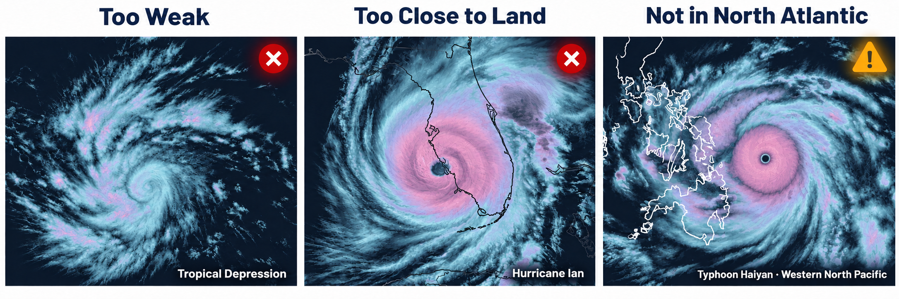

SD-TCR: A Model for Tropical Cyclone Size Estimation
34ktReminder: SD-TCR model is trained on the Atlantic Basin. Other basins are experimental.
Past Storm
34ktReminder: SD-TCR model is trained on the Atlantic Basin. Other basins are experimental.
A quick guide on how to use our SD-TCR model.
Getting started
- Select a storm.
- Inspect the infrared image.
- Press Infer R34 Using Our Model.
What is R34?
R34 is the radius of 34-knot winds around a tropical cyclone. A knot is one nautical mile per hour; 34 kt is about 63 km/h.
The estimate is a distance, shown in nautical miles (n mi). One nautical mile equals 1.852 km. This model returns a single radius distribution, rather than four separate quadrant radii.
What is the SD-TCR model?
SD-TCR stands for Self-Distilled Tropical Cyclone Radii Estimator. It uses a classification-based approach to estimate a probability distribution over wind-radius bins from satellite infrared imagery. During training, the two-model self-distillation design uses soft predictions to help the target model learn how probability is distributed across neighboring radius bins.
The VGG target model achieved a mean absolute error (MAE) of 24.31 n mi across 934 samples from 28 storms in the 2023–2025 test set, evaluated against IBTrACS mean R34.
Reminder of invalid cases

- Too weak or too asymmetric. Tropical depressions and tropical storms with highly asymmetric cloud structures are unsuitable for this model.
- Too close to land. At landfall or within 150 km of the coastline, land can alter the storm’s cloud structure and make the estimate unreliable.
- Cross-basin experiment. The model was trained on North Atlantic storms. Use caution in other basins, where its accuracy has yet to be established.
How to read the result?
The curve assigns a probability to each of 59 radius bins, from 10 to 300 n mi. The large number is the mean radius, calculated from that distribution. It is a circular model estimate, not an observed wind boundary or four-quadrant wind analysis. A wider curve means the model spreads probability over more radii; it is not a calibrated confidence interval.
SD-TCR: Uncertainty-Aware Probabilistic Estimation of Tropical Cyclone Wind Radii from Satellite Infrared Imagery
Abstract
Best-track estimates of tropical cyclone 34-kt wind radii (R34) are subject to uncertainty because observations of the surface wind field are often incomplete. We propose SD-TCR, an uncertainty-aware self-distillation framework for estimating mean R34 in North Atlantic tropical cyclones from satellite infrared imagery. To account for uncertainty in the training labels, we represent each best-track R34 estimate as a Gaussian soft label over discrete radius bins. A reference neural network learns from these soft labels and provides an image-dependent distribution to train a target network. The target network produces a distribution from a single storm-centered infrared image, and its expected value provides a continuous R34 estimate. We plan to assess the reliability of the predicted intervals on a held-out set of cases with aircraft reconnaissance–aided best-track analyses by comparing empirical coverage with nominal coverage. We also plan to compare point estimates with direct regression across observed R34 ranges, with particular attention to the underestimation of large wind radii.
1 Introduction and Past Similar Work
The radius of 34-kt winds (R34) describes the horizontal extent of gale-force surface winds associated with a tropical cyclone (TC). Together with storm track and intensity, R34 helps identify the areas that may experience hazardous winds and informs marine route planning (Knaff et al. 2016). Operational analyses report R34 separately for four geographic quadrants to describe asymmetries in the wind field. Estimating these radii over the open ocean is difficult because surface wind observations are often sparse. For North Atlantic TCs, Landsea and Franklin (2013) reported survey-based estimates of average best-track R34 uncertainty of about 40 nautical miles for storms monitored by satellite alone and about 30 nautical miles when aircraft reconnaissance supplemented satellite observations. This uncertainty matters when best-track radii serve both as training labels and as references for evaluating satellite-based estimates.
Satellite infrared (IR) imagery offers a way to estimate TC wind radii over the open ocean. Dolling et al. (2016) used a measure of cloud-pattern symmetry derived from IR imagery, together with other storm predictors, in multiple linear regression models for North Atlantic wind radii. Zhuo and Tan (2021) developed DeepTCNet, a physics-augmented deep learning model that jointly estimates TC intensity and size from IR imagery. They evaluated wind-radius estimates against aircraft reconnaissance–aided best-track analyses. Wang and Li (2023) developed DL-TCR to estimate quadrant-specific wind radii and showed that assigning greater loss weight to large radii reduced their underestimation. Jin et al. (2024) used knowledge distillation to estimate wind radii when some input data sources were unavailable at inference. These studies motivate a related question: can training on distributions that represent uncertainty in best-track R34 labels reduce the underestimation of large radii and yield intervals whose empirical coverage agrees with their nominal coverage?
2 Data and Methods
2.1 Geostationary satellite infrared TC images
We use infrared (IR) window brightness temperatures from the NOAA GridSat-B1 Climate Data Record (Knapp et al. 2011). The product provides observations near 11 μm every 3 h on an approximately 0.07° × 0.07° latitude–longitude grid. For each matched best-track fix, we extract a single-channel 156 × 156 pixel image centered on the TC position. The crop spans approximately 10.9° × 10.9°. Its east–west extent in kilometers varies with the latitude of the storm center.
Let Tb,i(u,v) denote the brightness temperature at pixel (u,v) in image i, and let g denote the pixelwise transformation applied before standardization. The normalized input is
where μtrain and σtrain are the mean and standard deviation of the transformed training pixels. The same statistics are used for the validation and test images.
TBD: Confirm the final transformation and normalization.
2.2 Best-track dataset of TCs
We obtain storm positions and quadrant-specific 34-kt wind radii for North Atlantic TCs from the International Best Track Archive for Climate Stewardship (IBTrACS; Knapp et al. 2010). The target for each matched fix i is the arithmetic mean of the northeast (NE), southeast (SE), southwest (SW), and northwest (NW) best-track radii,
with all radii expressed in nautical miles (nmi).
We retain a matched fix only when all four quadrant radii are available and strictly positive and the storm center is more than 150 km from the nearest land in the IBTrACS land mask. The latter criterion is applied using the IBTrACS DIST2LAND field and is intended to limit the influence of land proximity on the sampled wind structure. These criteria restrict the study sample to offshore fixes with positive analyzed radii in all four quadrants.
The dataset is partitioned by storm identifier so that all retained fixes from a given TC belong to a single partition (Table 1). We plan to use an aircraft reconnaissance–aided subset of the held-out test fixes to evaluate interval coverage against the corresponding best-track radii.
| Partition | Seasons | TCs | Retained fixes |
|---|---|---|---|
| Training | TBD | TBD | TBD |
| Validation | TBD | TBD | TBD |
| Held-out test | TBD | TBD | TBD |
| Recon.-aided subset | TBD | TBD | TBD |
2.3 Development of the SD-TCR model
Radius representation and soft labels
SD-TCR represents mean R34 using B = 59 ordered radius bins with centers cb = 10 + 5(b − 1) nmi for b = 1, …, B. Motivated by the uncertainty in best-track wind radii (Landsea and Franklin 2013) and by the distributional training used for TC intensity estimation (Wimmers et al. 2019), we assign each sample a Gaussian soft label centered on its best-track mean radius:
We use σr = 10 nmi as the soft-label bandwidth. Both networks apply softmax to their output logits to obtain a distribution over the B bins. For any such distribution pi, the corresponding point estimate is .
Reference DNN
The reference DNN is first pretrained using absolute error on the expected radius. It is then trained with a label-distribution objective based on the KL divergence from the Gaussian soft label qi to the reference output piref. The two loss terms are
TBD: Specify the complete reference fine-tuning objective.
During target training, the reference network is frozen. Following the noisy augmentation-based ensembling (NAE) approach of Suzuki et al. (2026) and the use of rotational ensembles for TC imagery by Chen et al. (2019), we generate K = 3 views of each training image by rotating it about the TC center and adding small uniform pixel noise. The distillation target is the mean of the reference softmax outputs:
where ℛθi,k denotes rotation by θi,k and εi,k is the uniform-noise perturbation for view k.
TBD: Specify the angle sampling, rotation interpolation, and noise amplitude.
Target DNN
The target DNN receives the unrotated IR image Xi and produces pitar. Its training objective combines absolute error on the expected radius with KL divergence from the ensembled reference distribution to the target output:
where λ controls the weight of the distillation term. At inference, the target DNN produces the radius distribution and its expected value from one unrotated image.
3 Results and Discussion
This section is in progress.
4 Conclusions
This section is in progress.
References
- Chen, B.-F., B. Chen, H.-T. Lin, and R. L. Elsberry, 2019: Estimating tropical cyclone intensity by satellite imagery utilizing convolutional neural networks. Weather and Forecasting, 34, 447–465. 10.1175/WAF-D-18-0136.1
- Dolling, K., E. A. Ritchie, and J. S. Tyo, 2016: The use of the deviation angle variance technique on geostationary satellite imagery to estimate tropical cyclone size parameters. Weather and Forecasting, 31, 1625–1642. 10.1175/WAF-D-16-0056.1
- Jin, Y., J. Liu, K. Ren, X. Wang, K. Deng, Z. Fan, C. Deng, and Y. Yue, 2024: Toward robust tropical cyclone wind radii estimation with multimodality fusion and missing-modality distillation. IEEE Transactions on Geoscience and Remote Sensing, 62, 1–18. 10.1109/TGRS.2024.3435957
- Knaff, J. A., C. J. Slocum, K. D. Musgrave, C. R. Sampson, and B. R. Strahl, 2016: Using routinely available information to estimate tropical cyclone wind structure. Monthly Weather Review, 144, 1233–1247. 10.1175/MWR-D-15-0267.1
- Knapp, K. R., M. C. Kruk, D. J. Levinson, H. J. Diamond, and C. J. Neumann, 2010: The International Best Track Archive for Climate Stewardship (IBTrACS): Unifying tropical cyclone best track data. Bulletin of the American Meteorological Society, 91, 363–376. 10.1175/2009BAMS2755.1
- Knapp, K. R., and coauthors, 2011: Globally gridded satellite (GridSat) observations for climate studies. Bulletin of the American Meteorological Society, 92, 893–907. 10.1175/2011BAMS3039.1
- Landsea, C. W., and J. L. Franklin, 2013: Atlantic hurricane database uncertainty and presentation of a new database format. Monthly Weather Review, 141, 3576–3592. 10.1175/MWR-D-12-00254.1
- Suzuki, S., S. Yamaguchi, S. Takeda, T. Kaneko, S. Orihashi, and R. Masumura, 2026: Distribution highlighted reference-based label distribution learning for facial age estimation. Proceedings of the IEEE/CVF Winter Conference on Applications of Computer Vision, 6464–6473. Publisher page
- Wang, C., and X. Li, 2023: A deep learning model for estimating tropical cyclone wind radius from geostationary satellite infrared imagery. Monthly Weather Review, 151, 403–417. 10.1175/MWR-D-22-0166.1
- Wimmers, A., C. Velden, and J. H. Cossuth, 2019: Using deep learning to estimate tropical cyclone intensity from satellite passive microwave imagery. Monthly Weather Review, 147, 2261–2282. 10.1175/MWR-D-18-0391.1
- Zhuo, J.-Y., and Z.-M. Tan, 2021: Physics-augmented deep learning to improve tropical cyclone intensity and size estimation from satellite imagery. Monthly Weather Review, 149, 2097–2113. 10.1175/MWR-D-20-0333.1
Observation Record
Select a storm on the Global Monitor to inspect the record behind its latest estimate.